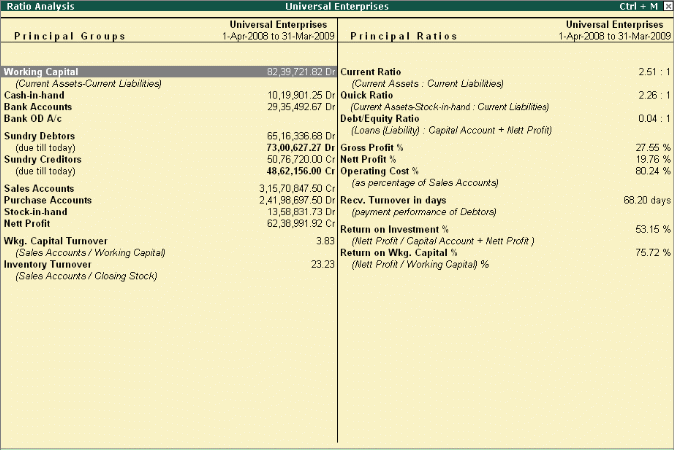
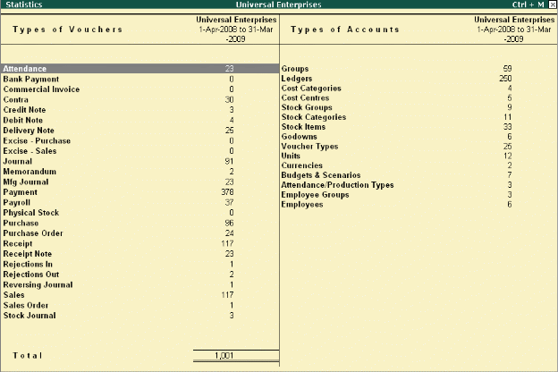

Bird's eye View/ Drill Down Display:
Tally.ERP 9's unique features provide you with the required information at a glance. For example- Ratio Analysis and Statistics provide you with wealth of information for decision making in a single screen.
Go to Gate way of tally> ratio analysis

Go to Gate ways of tally> display> statement of accounts> statistics

------------------------------------------------------------------------------------------------------------------------------------------